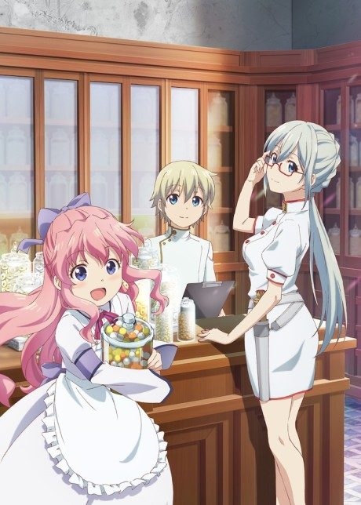
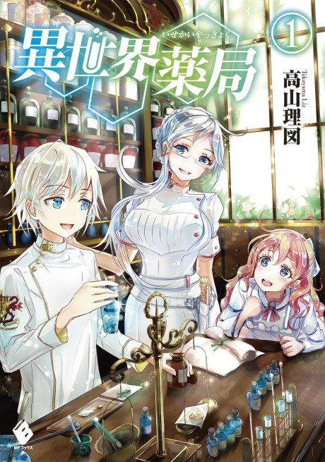
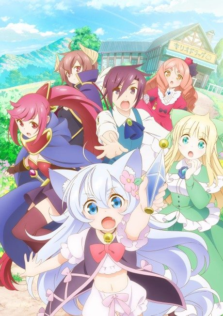
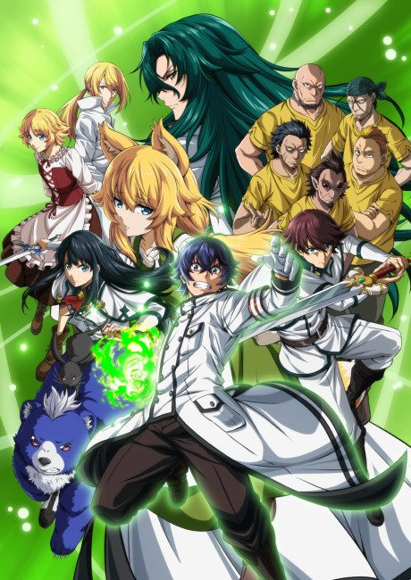
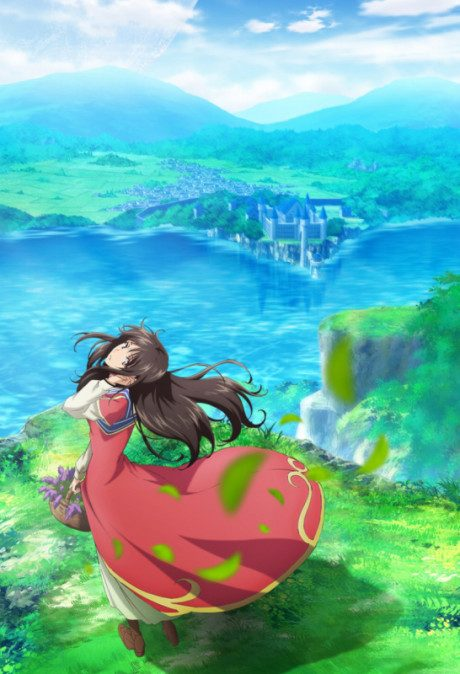
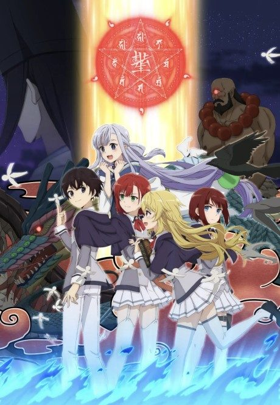

Parallel World Pharmacy
異世界薬局
A pharmacist who died from overwork is reborn in a medieval world as a boy with powers to create medicine.
After the anime, read the light novel from Volume 3.
7.2AniList score
—Animeter, no votes yet
12episodes
Rate it or report where you stopped
Is it worth pushing through?
Built from what visitors report across all 12 episodes.
Loading reports…Checking what other people said about this one.
Sign in above with your email to add your report.
More like Parallel World Pharmacy
 Manga Vol. 58.1
Manga Vol. 58.1
 Manga Vol. 157.6
Manga Vol. 157.6
 Manga Ch. 2157.7
Manga Ch. 2157.7
 Unclear7.6
Unclear7.6

Unclear6.1 Manga Ch. 347.6
Manga Ch. 347.6

Manga Vol. 37.5 Manga Vol. 67.4
Manga Vol. 67.4
 Novel ahead8.2
Novel ahead8.2
 Manga Ch. 1117.2
Manga Ch. 1117.2

Manga Vol. 97.1
Manga Vol. 77.0